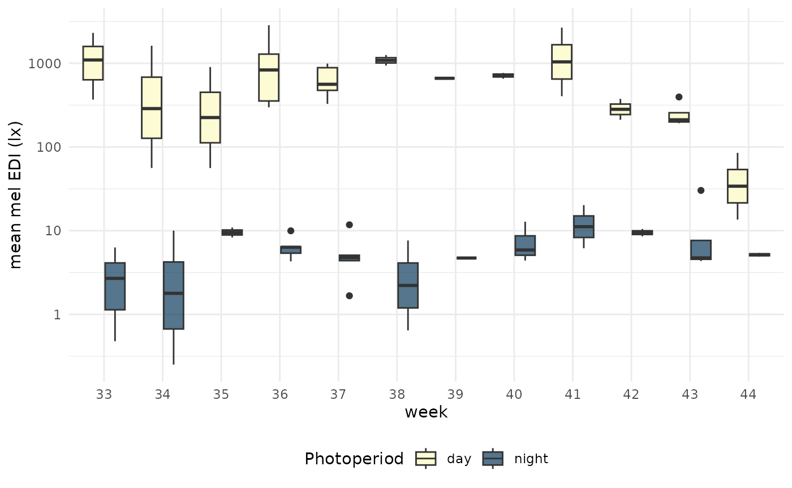

Photoperiod information such as dusk, dawn, sunrise, or sunset are
highly relevant in the context of personal light exposure data. Compared
to ambient environmental light levels, these data are usually not
measured, but rather calculated, based on a participant’s geographical
location. Since the introduction of version
0.5.0 Civil dawn, LightLogR aims to provide a
simple yet powerful suite of functions to implement photoperiod
information in visualizations, data processing, and metric calculation.
This article showcases the extension of analysis pipelines when dealing
with such data.
We start off by loading LightLogR and packages needed
for this tutorial:
library(LightLogR)
library(tidyverse)
library(gt)
library(gtsummary)
#convenience functions for table display
gt_tab <- function(dataset, caption) {
dataset |>
gt() |>
tab_style(cell_text(weight = "bold"),
locations = cells_column_labels())
}Please note that this article uses the base pipe operator
|>. You need an R version equal to or greater than 4.1.0 to use it. If you are using an older version, you can replace it with themagrittrpipe operator%>%.
Importing Data
We will use data imported and cleaned already in the article Import & Cleaning.
#this assumes the data is in the `cleaned_data` folder in the working directory
data <- readRDS("cleaned_data/ll_data.rds")
#to save computational time, we will only use a few columns from the data
data <- data |> select(Id, Datetime, MEDI)Here is are the first three lines of the data
| Id | Datetime | MEDI |
|---|---|---|
| 201 | 2023-08-14 10:55:21 | 716.99 |
| 201 | 2023-08-14 10:55:31 | 721.91 |
| 201 | 2023-08-14 10:55:41 | 653.15 |
As can be seen by using gg_overview(), the dataset
contains 17 ids with one weeks worth of data each, and one to three
participants per week.
data |> gg_overview()
Adding photoperiod information
Adding photoperiod information to a dataset is easy, but requires four pieces of information:
- For which dates should the photoperiod information be added?
- For which timezone should the photoperiod information be provided?
- For which location should the photoperiod information be added?
- How is photoperiod defined?
The first two aspects are (usually) already defined by any dataset
imported with LightLogR. It contains information about
relevant days, and the Datetime column contains the
necessary timezone information. The latter two aspects need to be
provided by the user.
Geolocation
The geographical location is defined by a set of coordinates in the
form of latitude and longitude. Our sample
data were collected in Tübingen, Germany, which is located at 48.52°N,
and 9.06°E. The coordinates need to be stored in a numeric vector of
length 2. The order of latitude and longitude is
essential.
coordinates <- c(48.521637, 9.057645)What is photoperiod?
Here, photoperiod covers the time the sun is above a given threshold
elevation (or rather depression), relative to the horizon. What this
elevation/depression should be is decided by the user. While
LightLogR uses a default depression angle of
6 degrees, yielding Civil dawn/dusk, other
depression angles can be set, depending on the research at hand. A
depression value of 0 degrees for sunrise/sunset, 12 degrees
for Nautical dawn/dusk, or 18 degrees for Astronomical
dawn/dusk. We find that Civil dawn/dusk relates best to
the steep rise in environmental illuminance levels, which is why it was
set as the default.
Calculating photoperiod
LightLogR provides several ways to calculate dawn and
dusk information. Likely the most useful function is
add_photoperiod(), as is directly expands a dataset with
all the necessary information.
data |>
add_photoperiod(coordinates) |>
#from here on out is just formatting
head(3) |>
gt_tab(caption = "Photoperiod Information for the first three observations") |>
fmt_duration("photoperiod") |>
fmt_datetime(c("dawn", "dusk")) |>
tab_style(style = cell_text(color = "red"),
locations = list(cells_body(dawn:photoperiod.state),
cells_column_labels(dawn:photoperiod.state))
)| Datetime | MEDI | dawn | dusk | photoperiod | photoperiod.state |
|---|---|---|---|---|---|
| 201 | |||||
| 2023-08-14 10:55:21 | 716.99 | 2023-08-14 05:40:27 | 2023-08-14 21:15:32 | 15h 35m 4s | day |
| 2023-08-14 10:55:31 | 721.91 | 2023-08-14 05:40:27 | 2023-08-14 21:15:32 | 15h 35m 4s | day |
| 2023-08-14 10:55:41 | 653.15 | 2023-08-14 05:40:27 | 2023-08-14 21:15:32 | 15h 35m 4s | day |
The way LightLogR provides this information is not a
singular number, but rather a set of values relevant for the
photoperiod. dawn and dusk columns provide the
start and end times of the photoperiod, respectively.
photoperiod is the length of the photoperiod, defined by
dawn and dusk times. Finally, the
photoperiod.state defines whether the current observation
(Datetime) is within (day) or outside
(night) the relevant photoperiod.
Adding this information might not be necessary in all cases, however.
If only the relevant photoperiods are required, but need not be part of
the whole dataset, extract_photoperiod() is the right
choice. This functions works the same way as
add_photoperiod(), but returns a dataframe with relevant
days:
data |>
extract_photoperiod(coordinates) |>
#from here on out is just formatting
head(3) |>
gt_tab(caption = "Photoperiod Information for the first three days") |>
fmt_duration("photoperiod") |>
fmt_number(c(lat, lon)) |>
fmt_datetime(c("dawn", "dusk"))| date | tz | lat | lon | solar.angle | dawn | dusk | photoperiod |
|---|---|---|---|---|---|---|---|
| 2023-08-14 | Europe/Berlin | 48.52 | 9.06 | -6 | 2023-08-14 05:40:27 | 2023-08-14 21:15:32 | 15h 35m 4s |
| 2023-08-15 | Europe/Berlin | 48.52 | 9.06 | -6 | 2023-08-15 05:41:59 | 2023-08-15 21:13:36 | 15h 31m 36s |
| 2023-08-16 | Europe/Berlin | 48.52 | 9.06 | -6 | 2023-08-16 05:43:32 | 2023-08-16 21:11:40 | 15h 28m 8s |
Finally, photoperiods not connected to a specific dataset might be
required. In this case, photoperiod() is a useful basic
helper function. As it does not draw upon a dataset, dates and the
timezone must be supplied separately.
dates <- c("2025-06-21", "2025-12-21")
timezone <- "Europe/Berlin"
photoperiod(coordinates, dates, timezone) |>
#from here on out is just formatting
gt_tab(caption = "Photoperiod information for winter and summer solstice") |>
fmt_datetime(c("dawn", "dusk")) |>
fmt_number(c(lat, lon)) |>
fmt_duration("photoperiod")| date | tz | lat | lon | solar.angle | dawn | dusk | photoperiod |
|---|---|---|---|---|---|---|---|
| 2025-06-21 | Europe/Berlin | 48.52 | 9.06 | -6 | 2025-06-21 04:39:37 | 2025-06-21 22:11:38 | 17h 32m |
| 2025-12-21 | Europe/Berlin | 48.52 | 9.06 | -6 | 2025-12-21 07:36:07 | 2025-12-21 17:07:46 | 9h 31m 39s |
This provides a good opportunity to change the solar depression angle, showcasing the differences in photoperiod
photoperiod(coordinates, dates, timezone, solarDep = 0) |>
#from here on out is just formatting
gt_tab(caption = "Photoperiod information for sunrise/sunset") |>
fmt_datetime(c("dawn", "dusk")) |>
fmt_number(c(lat, lon)) |>
fmt_duration("photoperiod") |>
tab_style(style = cell_text(color = "red"),
locations = list(cells_body(solar.angle),
cells_column_labels(solar.angle))
)| date | tz | lat | lon | solar.angle | dawn | dusk | photoperiod |
|---|---|---|---|---|---|---|---|
| 2025-06-21 | Europe/Berlin | 48.52 | 9.06 | 0 | 2025-06-21 05:28:05 | 2025-06-21 21:23:10 | 15h 55m 4s |
| 2025-12-21 | Europe/Berlin | 48.52 | 9.06 | 0 | 2025-12-21 08:19:20 | 2025-12-21 16:24:34 | 8h 5m 14s |
To compare different settings, purrr::map() is your
friend
solarDep <- c(0, 6, 12, 18)
solarDep |>
map(\(solarDep) photoperiod(coordinates, dates[1], timezone, solarDep)) |>
list_rbind() |>
arrange(date) |>
select(solar.angle, dawn, dusk, photoperiod) |>
gt(caption = "Comparing different solar depression values for summer solstice") |>
fmt_datetime(c("dawn", "dusk")) |>
fmt_duration("photoperiod") |>
tab_style(style = cell_text(color = "red"),
locations = list(cells_body(solar.angle),
cells_column_labels(solar.angle))
)| solar.angle | dawn | dusk | photoperiod |
|---|---|---|---|
| 0 | 2025-06-21 05:28:05 | 2025-06-21 21:23:10 | 15h 55m 4s |
| -6 | 2025-06-21 04:39:37 | 2025-06-21 22:11:38 | 17h 32m |
| -12 | 2025-06-21 03:40:07 | 2025-06-21 23:11:07 | 19h 31m |
| -18 | 2025-06-21 01:36:15 | 2025-06-22 01:14:47 | 23h 38m 31s |
Visualizing photoperiod
LightLogR provides a simple interface to add photoperiod
information to plots created with gg_day(),
gg_days(), or gg_doubleplot(). These can
either draw on previously added photoperiod information, or create it on
the fly.
As the dataset is quite extensive, we will use a portion of five days
from three participants. This is easy with the
filter_Date() function:
data_partial <-
data |>
filter_Date(start = "2023-08-15", length = "5 days")
data_partial |> gg_overview()
Integration with gg_day()
data_partial |>
gg_day(aes_col = Id, geom = "line") |>
gg_photoperiod(coordinates)
#this is identical to:
# data_partial |>
# add_photoperiod(coordinates) |>
# gg_day(aes_col = Id, geom = "line") |>
# gg_photoperiod()Integration with gg_days()
data_partial |>
gg_days() |>
gg_photoperiod(coordinates)
#this is identical to:
# data_partial |>
# add_photoperiod(coordinates) |>
# gg_days() |>
# gg_photoperiod()If photoperiod information is added prior to plotting, it can also be
used for the main geom:
data_partial |>
add_photoperiod(coordinates) |>
gg_days(
aes_col = photoperiod.state,
group = consecutive_id(photoperiod.state),
jco_color = TRUE) +
theme(legend.position = "bottom") +
labs(col = "State of the photoperiod")
Integration with gg_doubleplot()
Integration in gg_doubleplot() is similar to the other
plotting functions. However, because gg_doubleplot() uses
some trickery under the hood in cases where it repeats the same day
twice (which is the case when only one day per group is present, or
type = "repeat" is set), we strongly suggest that the
photoperiod information is added prior to plotting. If not, the
photoperiod for the repeated day will actually draw on the consecutive
calender date. While only a minor difference of a few minutes, this is
easily avoided.
data_partial |>
filter_Date(length = "1 day") |>
add_photoperiod(coordinates) |>
gg_doubleplot() |>
gg_photoperiod()
#NOT the same as:
# data_partial |>
# filter_Date(length = "1 day") |>
# gg_doubleplot() |>
# gg_photoperiod(coordinates)Combination with aggregate_Date()
Adding photoperiod data to a dataset means it can be manipulated the
same way any other column in the dataset. aggregate_Date()
is a great way to condense multiple days of data collection into a
single day. For this example, we will use the full dataset again to
start off. We suggest that photoperiods are added after
aggregate_Date() is applied, as the aggregation of
datetimes can be error prone. E.g., the mean of dusk
6:00:00 on 1 Feb, and 6:01:00 on 2 Feb would
be 18:00:30 on 1 Feb. While certainly correct from a
numeric standpoint (as datetimes are stored in seconds from
a reference), it does not make much sense for dusk or
dawn values to be shifted in this sense. By applying the
photoperiod information after aggregation, you can be sure they are
based on the aggregated datetimes.
data |>
filter(Id %in% c(201, 212, 216, 222)) |>
aggregate_Date(unit = "5 mins") |>
add_photoperiod(coordinates) |>
gg_doubleplot() |>
gg_photoperiod(alpha = 0.9)Differences in solar depression angle
We can show the difference the solar depression angle makes by
visualizing different variants. We use the
sample.data.environment that comes with
LightLogR. It contains ambient environmental illuminance
values:
sample.data.environment |>
gg_days() |>
gg_photoperiod(coordinates) 
We use the Environment data from
Sat 09/02/23 to showcase this.
#preparing a dataset with multiple solar depression angles:
multiple_solarDep <-
solarDep |>
rlang::set_names() |>
map(\(solarDep) {
sample.data.environment |>
filter(Id == "Environment") |>
filter_Date(start = "2023-09-02", length = "1 day") |>
add_photoperiod(coordinates, solarDep = solarDep)
}) |>
list_rbind(names_to = "solarDep") |>
mutate(solarDep = paste0(solarDep, "°"),
solarDep = factor(solarDep, levels = c("0°", "6°", "12°", "18°"))) |>
group_by(solarDep)
#actual plotting:
multiple_solarDep |>
gg_doubleplot(facetting = FALSE) |>
gg_photoperiod(alpha = 0.8) +
facet_wrap(~solarDep, ncol = 1) +
labs(title = "Differences in photoperiod\ndepending on solar depression angle")
The influence of solar depression angle can also be displayed in a single plot:
#plotting in one facet:
multiple_solarDep |>
gg_doubleplot(facetting = FALSE) |>
gg_photoperiod(alpha = 0.25) +
labs(title = "Differences in photoperiod\ndepending on solar depression angle")
Calculating metrics
Metrics calculation with photoperiod data is quite straightforward, as photoperiod can be used as a direct grouping aspect, or as an intermediary. In all cases it is sensible to add the photoperiod information to the data:
data <-
data |>
add_photoperiod(coordinates)Photoperiod as a grouping aspect
We can group by photoperiod (within participants) to calculate
metrics for daytime or nighttime sections. We will calculate a simple
mean value and summarize the results with the help of the
gtsummary package.
data |>
group_by(photoperiod.state, .add = TRUE) |> # setting .add = TRUE ensures prior grouping is kept
summarize(mean_MEDI = mean(MEDI), .groups = "drop") |>
tbl_summary(by=photoperiod.state,
include = "mean_MEDI",
label = mean_MEDI ~ "mean mel EDI (lx)")| Characteristic |
day N = 171 |
night N = 171 |
|---|---|---|
| mean mel EDI (lx) | 727 (298, 1,036) | 7 (5, 8) |
| 1 Median (Q1, Q3) | ||
This results in a singular value per participant (N=17 in total) and photoperiod. If we are interested in the weekly values, we can further group by week.
per_week <-
data |>
group_by(Id, week = week(Datetime), photoperiod.state) |>
summarize(mean_MEDI = mean(MEDI), .groups = "drop")
#uncomment next lines for a tabular view
# per_week |>
# pivot_wider(names_from = week, values_from = mean_MEDI, names_prefix = "week ") |>
# tbl_summary(by=photoperiod.state,
# include = -Id,
# type =
# paste("week", 33:44) ~ "continuous",
# missing = "no"
# ) |>
# modify_header(label = "**mean mel EDI (lx)**")
per_week |>
ggplot(aes(x=factor(week), y = mean_MEDI)) +
geom_boxplot(aes(fill = photoperiod.state)) +
scale_y_log10() +
theme_minimal() +
labs(x = "week", y = "mean mel EDI (lx)", fill = "Photoperiod") +
theme(legend.position = "bottom")+
scale_fill_manual(values = c("#FDFBD3", "#003153AA"))
If one were to group by day (calender day), one disadvantage is that
the night portion of each day is split into two. From
midnight to dawn is part of the same bin as from dusk to midnight, when
grouping by day. This differs from our common understanding, where a
night on day 1 goes from dusk till dawn - and depending on the research
question, one or the other might be required. LightLogR has
the useful number_states() function for this case. It
allows to these types of counting independent of the 24 hour day. Let us
apply the function to our dataset.
data <-
data |>
number_states(photoperiod.state)
data |> pull(photoperiod.state.count) |> unique() |> head()
#> [1] "day 1" "night 1" "day 2" "night 2" "day 3" "night 3"The function creates a new column that divides our dataset into individual days and nights, which can be used for grouping.
this function is similarly useful if a “sleep/wake” column is present in the data, as it allows for the calculation of metrics based on singular sleep/wake episodes, indifferent of date.
per_day <-
data |>
group_by(Id, photoperiod.state, photoperiod.state.count) |>
summarize(mean_MEDI = mean(MEDI), .groups = "drop") |>
select(-photoperiod.state) |>
separate_wider_delim(photoperiod.state.count, " ", names = c("photoperiod.state", "count"))
per_day |>
pivot_wider(names_from = count, values_from = mean_MEDI, names_prefix = "day ") |>
tbl_summary(by=photoperiod.state,
include = -Id,
missing = "no"
) |>
modify_header(label = "**mean mel EDI (lx)**")| mean mel EDI (lx) |
day N = 171 |
night N = 171 |
|---|---|---|
| day 1 | 571 (312, 1,094) | 7 (3, 12) |
| day 2 | 615 (203, 979) | 4 (4, 5) |
| day 3 | 493 (395, 862) | 6 (3, 7) |
| day 4 | 280 (97, 673) | 6 (3, 9) |
| day 5 | 562 (350, 1,232) | 6 (4, 12) |
| day 6 | 580 (190, 1,257) | 5 (3, 7) |
| day 7 | 405 (288, 939) | 4 (4, 8) |
| day 8 | 286 (180, 826) | NA (NA, NA) |
| 1 Median (Q1, Q3) | ||
per_day |>
ggplot(aes(x=count, y = mean_MEDI)) +
geom_boxplot(aes(fill = photoperiod.state)) +
scale_y_log10() +
theme_minimal() +
labs(x = "day", y = "mean mel EDI (lx)", fill = "Photoperiod") +
theme(legend.position = "bottom") +
scale_fill_manual(values = c("#FDFBD3", "#003153AA"))
This approach has the further benefit that it works regardless of when data collection started. It will always bin the first, second, and so forth daytime periods of all participants together, same as for nighttime.
Photoperiod as an intermediary
Sometimes the photoperiod as a whole is not of interest, but rather
it is used as a point of reference to calculate a metric. One such
example was requested as a LightLogR feature in issue #39. There,
the intensity of daytime light exposure is defined as the mean
illuminance between first morning light exposure of 50 lux and the time
of civil dusk). Similarly, the mean intensity of evening light exposure
is defined as the mean illuminance between civil dusk and the last light
exposure of 50 lux. With the tools that LightLogR provides,
this is easy.
We will in our example on the
intensity of daytime light exposure, but evening light
exposure will be calculated alongside it. Because our datasets start in
the middle of the first day, and end in the middle of the last day, we
will remove those days from the further analysis:
We will start by calculating the timing of first morning light
exposure above 50 lux per participant and day through
the timing_above_threshold() function.
timing_light_exposure <-
data |>
group_by(Id, Day) |>
summarize(
FLiT_50 =
timing_above_threshold(
MEDI, Datetime, "above", 50, na.rm = TRUE, as.df = TRUE
),
.groups = "drop"
) |>
unnest(FLiT_50)
timing_light_exposure |>
head(4) |>
gt_tab() |>
tab_style(style = cell_text(color = "red"),
locations = list(cells_body(4),
cells_column_labels(4))
)| Id | Day | mean_timing_above_50 | first_timing_above_50 | last_timing_above_50 |
|---|---|---|---|---|
| 201 | 2023-08-15 | 2023-08-15 13:39:19 | 2023-08-15 06:53:21 | 2023-08-15 20:25:51 |
| 201 | 2023-08-16 | 2023-08-16 12:57:39 | 2023-08-16 07:02:51 | 2023-08-16 20:21:31 |
| 201 | 2023-08-17 | 2023-08-17 14:24:54 | 2023-08-17 06:28:11 | 2023-08-17 20:11:31 |
| 201 | 2023-08-18 | 2023-08-18 12:50:59 | 2023-08-18 07:01:41 | 2023-08-18 20:02:31 |
This step provided us with the first timing of light above 50 lux, and, incidentally, also the last timing of light above 50 lux, which we need for the intensity of evening light. In the next step, we will add this information to our dataset.
data <-
data |>
left_join(timing_light_exposure, by = join_by(Id, Day))
data |>
head(4) |>
select(Id, MEDI, Datetime, dusk, first_timing_above_50) |>
ungroup() |>
gt_tab() |>
fmt_datetime(dusk) |>
cols_label(first_timing_above_50 = "First timing above 50 lux",
dusk = "Dusk") |>
tab_style(style = cell_text(color = "red"),
locations = list(cells_body(3:5),
cells_column_labels(3:5))
)| Id | MEDI | Datetime | Dusk | First timing above 50 lux |
|---|---|---|---|---|
| 201 | 0 | 2023-08-15 00:00:01 | 2023-08-15 21:13:36 | 2023-08-15 06:53:21 |
| 201 | 0 | 2023-08-15 00:00:11 | 2023-08-15 21:13:36 | 2023-08-15 06:53:21 |
| 201 | 0 | 2023-08-15 00:00:21 | 2023-08-15 21:13:36 | 2023-08-15 06:53:21 |
| 201 | 0 | 2023-08-15 00:00:31 | 2023-08-15 21:13:36 | 2023-08-15 06:53:21 |
This provides us with an expanded dataset containing the light
exposure time series (Datetime), and information for
Dusk and First timing above 50 lux. By
checking whether each observation is within the first timing of light
and dusk, we prepare our data for the final step.
data <-
data |>
mutate(light.type =
case_when(
between(Datetime, first_timing_above_50, dusk) ~ "daytime",
between(Datetime, dusk, last_timing_above_50) ~ "evening",
.default = NA)
)While we were at it, we also calculated the check for evening light.
In the last step we calculate the mean melanopic EDI for
each state, per participant and day.
metric <-
data |>
group_by(Id, Day, light.type) |>
summarize(mean_MEDI = mean(MEDI), .groups = "drop") |>
drop_na()
metric |>
head(9) |>
gt_tab() |>
fmt_number(mean_MEDI) |>
tab_style(style = cell_fill(color = "#FDFBD3"),
locations = cells_body(rows = light.type == "daytime")
) |>
tab_style(style = list(cell_fill(color = "#003153AA"),
cell_text(color = "white")),
locations = cells_body(rows = light.type == "evening")
) |>
cols_label(light.type = "Type", mean_MEDI = "mean MEDI (lux)")| Id | Day | Type | mean MEDI (lux) |
|---|---|---|---|
| 201 | 2023-08-15 | daytime | 1,830.91 |
| 201 | 2023-08-16 | daytime | 1,310.01 |
| 201 | 2023-08-17 | daytime | 429.52 |
| 201 | 2023-08-18 | daytime | 1,410.28 |
| 201 | 2023-08-19 | daytime | 935.96 |
| 201 | 2023-08-20 | daytime | 211.38 |
| 202 | 2023-08-15 | daytime | 1,132.31 |
| 202 | 2023-08-15 | evening | 8.06 |
| 202 | 2023-08-16 | daytime | 553.03 |
You can see that not every day has a evening light intensity value.
This is due to the way our calculation is set up - if a participant has
no light exposure above 50 lux after dusk, there is no accompanying
value. Also note that the value we are seeing for participant
202 on 2023-08-15 is about 8 lux, which is
below 50 lux. Again, this is due to the way the calculation is set up.
We calculate the last time a participant is above 50 lux after dusk. But
they can very well be below 50 lux between dusk and that last time,
yielding a lower average melanopic EDI value. In the final step, we
aggregate this information across participants. We can see that there
are 102 participant days for the daytime light condition, but only 75
participant days for the evening light condition.
metric |>
tbl_summary(by = light.type,
include = mean_MEDI,
label = mean_MEDI ~ "mean mel EDI (lx)"
)| Characteristic |
daytime N = 1021 |
evening N = 751 |
|---|---|---|
| mean mel EDI (lx) | 518 (213, 1,141) | 17 (8, 27) |
| 1 Median (Q1, Q3) | ||
Conclusion
The suite of photoperiod functions provides a powerful addition to
the toolkit of LightLogR, be it for visualizations, metric
calculations, or simply as part of the analysis process. If there are
aspects of photoperiods you feel are missing from
LightLogR, help us to improve it and submit an issue on
Github.